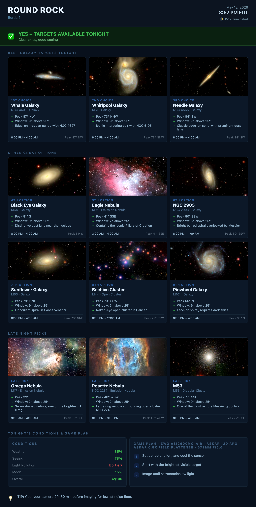

AstroAlert is an open-source Python application that automatically evaluates tonight's imaging conditions for one or more observing sites and sends you a nightly email alert with a full-color Report Card attached as a PDF-quality PNG image.
It pulls live data from three independent weather and atmospheric sources, combines them into a single 0–100 score, then recommends the best 12 deep-sky objects to photograph — in ranked order — based on your location, the time of year, and what will be highest in the sky during the darkest part of the night.
This is a real report card generated for Durham Home on a clear spring night. The top row shows the three highest-ranked imaging targets; the middle six are solid alternatives; the bottom row are late-night picks that peak after midnight.

The Report Card is a 900-pixel-wide PNG image attached to every alert email. It is divided into five sections:
| Section | What it shows |
|---|---|
| Header | Site name, Bortle class, drive time, current local time |
| Banner | GO or NO-GO verdict with a plain-English summary |
| Best 3 Targets | Top-ranked imaging targets for the evening |
| Good Options (6) | Solid second-tier targets worth setting up on |
| Late Night Picks (3) | Objects that don't peak until after midnight |
Below the targets, a two-column panel shows Tonight's Conditions (weather, seeing, moon, darkness scores) and a Game Plan — a step-by-step guide for the session written by AI based on the night's conditions.
The composite score is a weighted average of three sub-scores, each from 0–100:
Cloud cover and precipitation from Open-Meteo. Clear skies score high; any cloud above 30% cuts the score significantly.
Atmospheric turbulence from 7timer.info. Affects star sharpness and SNR. Scored 1–8 on the Antoniadi scale.
Illumination percentage and whether the moon sets before astronomical twilight ends.
| Score | Verdict | Meaning |
|---|---|---|
| 70–100 | GO | Image tonight — conditions are good to excellent |
| 45–69 | Marginal | Possible but not ideal; check the warnings |
| 0–44 | NO-GO | Stay home — poor clouds, bad seeing, or bright moon |
AstroAlert scores every object in its catalogue against six factors and returns the best 12 for your site and date. The ranking algorithm is designed for OSC imaging — it weights large, emission-bright objects above small planetary nebulae, and strongly favours objects that peak early in the night.
| Factor | Rationale |
|---|---|
| Peak altitude | Higher = less atmosphere = sharper, brighter images |
| Object type | Emission nebulae rank highest for OSC imaging; planetary nebulae lowest |
| Angular size | Large objects fill your field of view and collect more total signal |
| Brightness | Brighter objects give better signal-to-noise per sub-frame |
| Timing | Objects peaking early in the night rank above late-night targets |
| Variety | The card always shows a mix of types — no single category sweeps all 12 slots |
| Field | Meaning |
|---|---|
| Rank label | 1st–3rd Choice, 4th–9th Option, Late Pick |
| Common name | Popular name (e.g. Whirlpool Galaxy) |
| Catalogue · Type | Messier/NGC designation and object class |
| Bullet points | Peak altitude + compass, hours above 25°, short description |
| Footer — left | Time window when the object is above 25° altitude (local time) |
| Footer — right | Peak altitude in degrees |
Each target card includes a real photograph of the object, not a simulated or artistic rendering. Images are sourced in priority order:
Images are cached locally after first download. Cache location: ~/Library/Application Support/AstroAlert/dso_images/. To force a refresh, delete the .png file for that object.
The window shown at the bottom of each target card is the span of time during tonight's imaging session (between astronomical twilight) when that object is above 25° altitude. Below 25° there is too much atmospheric extinction for quality imaging.
The compass direction (e.g. NNE, SSE) is the azimuth where the object peaks. This helps you quickly confirm your mount can reach it without hitting a pier, tree, or building.
AstroAlert recommends objects from seven categories. Each behaves differently through an OSC camera:
| Type | Notes for OSC imagers |
|---|---|
| Emission Nebula | Dominated by Hα (red). Excellent SNR in dark skies. Consider a dual-narrowband filter at light-polluted sites. |
| Supernova Remnant | Large, faint Hα and OIII filaments. Needs long total exposure time. Best with a narrowband filter. |
| Reflection Nebula | Blue-scattered light from nearby stars. No line emission — broadband only, no benefit from narrowband. |
| Galaxy | Broadband targets. Darker skies matter more than for nebulae. Good seeing is critical for spiral arm detail. |
| Globular Cluster | Bright, forgiving targets. Great for shorter nights or when conditions are borderline. |
| Open Cluster | Often very large — check it fits your FOV. Short exposures work well. |
| Planetary Nebula | Usually very small (arc-seconds). Requires good seeing and longer focal length. |
AstroAlert ships as a self-contained desktop application — no Python, no command line, no dependencies to install. Download the file for your operating system, double-click, and you're running.
When you first open AstroAlert, macOS or Windows will show a security warning saying the app is from an unidentified developer or is unsigned. This is expected and safe to dismiss.
Code signing certificates cost several hundred dollars per year and require enrollment in Apple's or Microsoft's developer programs. AstroAlert is a free, open-source hobby project and is not commercially signed. The source code is fully public at github.com/paulydavis/astro-alert — anyone can inspect exactly what it does.
The app only does three things with the internet: fetches weather data from Open-Meteo and 7timer.info, downloads DSO images from public astronomy surveys (SDSS, Wikipedia), and sends email through your own SMTP credentials. It does not collect data, phone home, or communicate with any other server.
AstroAlert-macOS.zip from the releases pageAstroAlert.app to your Applications folderAstroAlert-Windows.zip from the releases page and unzip itAstroAlert.exe — no installation needed, it runs from anywhereAstroAlert-Linux.tar.gz from the releases pagetar -xzf AstroAlert-Linux.tar.gzchmod +x AstroAlert-Linux && ./AstroAlert-Linux.desktop file in ~/.local/share/applications/~/Library/Application Support/AstroAlert/ on macOS, %APPDATA%\AstroAlert\ on Windows, ~/.local/share/AstroAlert/ on Linux.
Everything is configured through the app's Settings tab — no config files to edit by hand.
Every night at your scheduled time, AstroAlert sends a single email. Here is what arrives in your inbox:
| Part | What it contains |
|---|---|
| Subject line | GO — Jordan Lake SRA tonight or NO-GO — Durham Home tonight — one glance tells you whether to go |
| Email body | Plain text summary: overall score, weather/seeing/moon breakdown, and the top 3 target names |
| Attached PNG | The full Report Card image — all 12 targets with photos, timing windows, and the session game plan. Open it on your phone or print it out to take to the field. |
You can send alerts to multiple addresses at once — useful for sharing with an imaging partner or a club distribution list. Enter them comma-separated in the recipient field.
Go to Settings → Email Credentials and enter:
| Field | What to enter |
|---|---|
| Email used to send alerts | The Gmail (or other SMTP) address alerts are sent from |
| App password | A Gmail App Password — not your regular password (see note below) |
| Alert recipient | One or more addresses to receive alerts, comma-separated |
Go to the Sites tab, click Add Site, and fill in the name, coordinates, Bortle class, and drive time. The map shows your site immediately. Set one site as Active — that is the one that receives the nightly alert.
Add as many sites as you like. Set active_site to the key you want alerts for by default.
{
"active_site": "dark_field",
"sites": {
"dark_field": {
"name": "Staunton River State Park",
"lat": 36.696,
"lon": -78.685,
"elevation_m": 110,
"bortle": 2,
"timezone": "America/New_York",
"drive_min": 120
}
}
}
Go to the Schedule tab and choose a daily alert time — 6 PM is recommended so you know whether to pack the car before sunset. Check Only alert on GO nights to receive email only when conditions are worth going out. On bad nights, silence is the alert.
Your equipment profile is stored in sites.json under the "equipment" key and can be edited in the app's Settings → Equipment section. It appears on every report card and is passed to the AI when generating session game plans.
| Field | Example |
|---|---|
| Camera | ZWO ASI2600MC-Air |
| Telescope | Askar 120 APO |
| Reducer / Field Flattener | Askar 0.8x field flattener |
| Mount | ZWO AM5N |
| Focal length (mm) | 672 |
| Focal ratio | f/5.6 |
| Field of view (degrees) | 2.3 x 1.6 |
Go to Settings → Equipment, fill in the fields for your setup, and click Save Equipment. The information appears on every report card and is used to personalise the AI-written session game plan.
The field-of-view value influences which targets score highest. Large emission nebulae (M42, M8) or galaxy groups (M81/M82) that fill a 2–3° frame rank above small objects that would need significant cropping.
The object may not be above 25° for long enough tonight, or a higher-ranked object of the same type already claimed its slot — the system limits how many of any one type appear so the card stays varied. Try checking on a different night when the object is better placed.
Yes. Add all your sites to sites.json. The alert email and attached cards will cover each site independently, so a club can receive one email with cards for several dark-sky sites.
Yes. Open-Meteo and 7timer.info are global. SDSS coverage is limited to the northern sky; for southern hemisphere objects the Legacy Survey and DSS fallbacks are used automatically.
The card and email still generate fully — a rule-based fallback writes the Game Plan and summary text. The OpenAI key only adds richer narrative language.
Yes — the target recommendations still apply. Emission nebulae rank highest and those are exactly the objects that benefit most from a dual-narrowband or Hα filter. The GO/NO-GO score is calculated for broadband imaging, so on nights the score is marginal you may still get good narrowband results since that filter cuts moonlight and light pollution.
All cached data lives in ~/Library/Application Support/AstroAlert/ (macOS) or ~/.local/share/AstroAlert/ (Linux). DSO images are in the dso_images/ subdirectory. Delete individual .png files to force a fresh download.